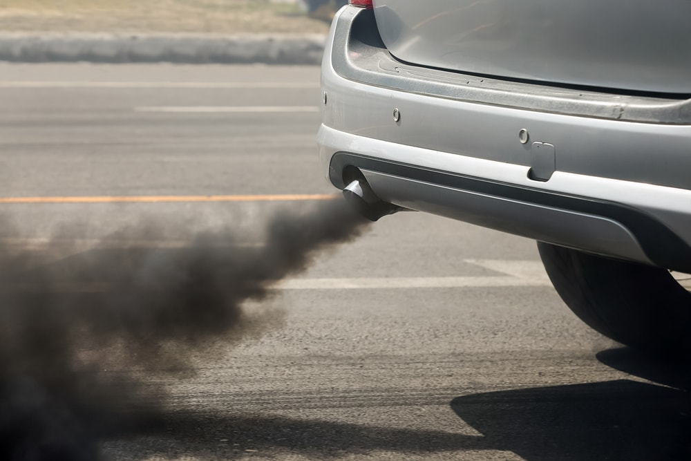
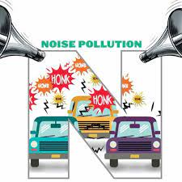
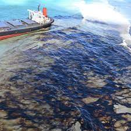
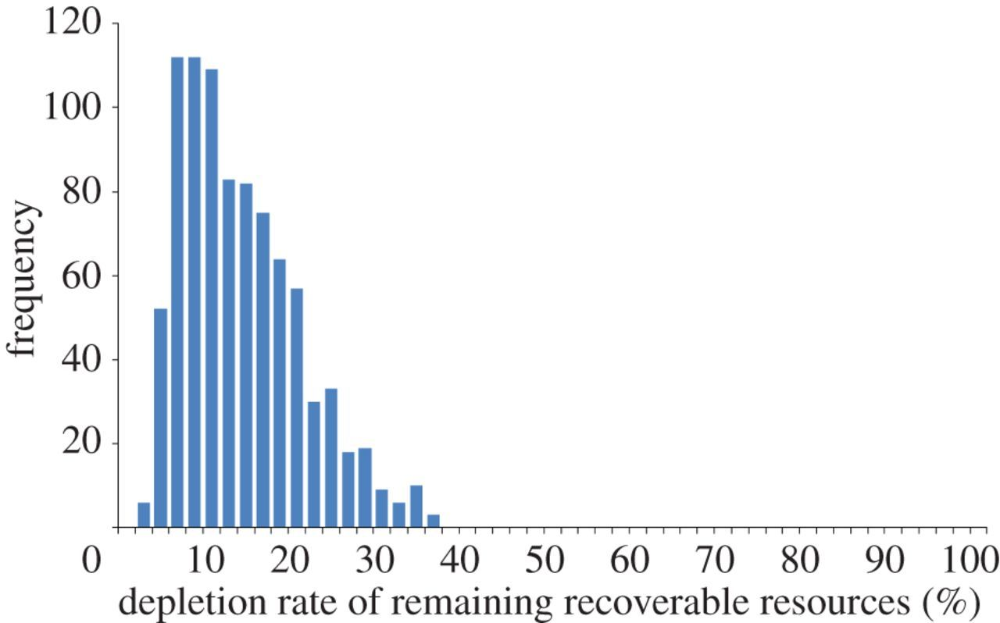
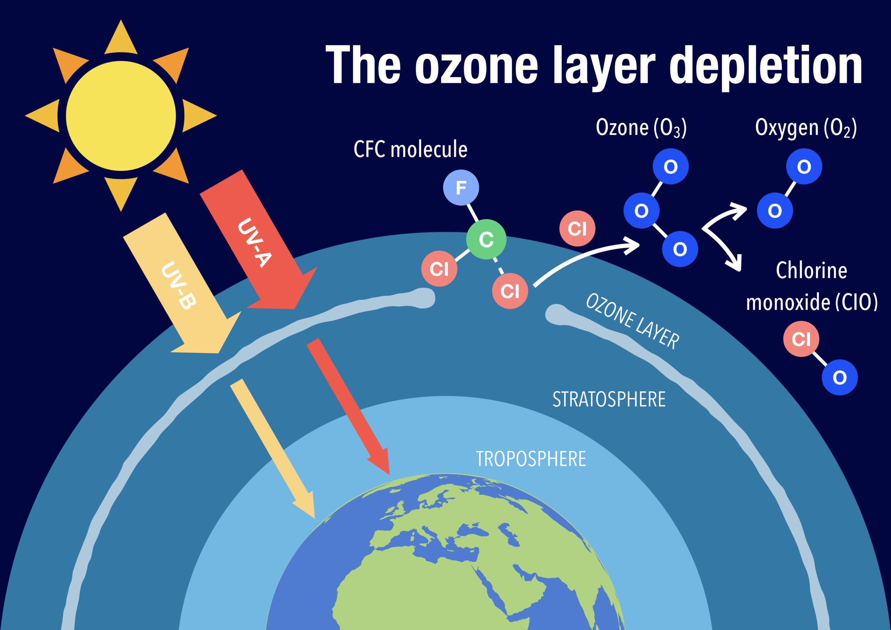

Air and noise pollution are pervasive environmental issues that pose significant threats to our health, well-being, and the planet. These forms of pollution have become inadvertent byproducts of modern industrialization, urbanization, and transportation systems.
Air pollution is the contamination of Earth's atmosphere by harmful substances, manifesting as solid particles, liquid droplets, or gases. These pollutants emanate from a myriad of sources, including industrial processes, transportation activities, energy generation, and natural occurrences. Notable air pollutants encompass carbon monoxide (CO), sulfur dioxide (SO2), nitrogen oxides (NOx), volatile organic compounds (VOCs), particulate matter (PM), and greenhouse gases such as carbon dioxide (CO2).
The repercussions of air pollution on human health are grave, as it contributes to respiratory ailments, heart diseases, and premature mortality. Furthermore, air pollution exerts profound ecological impacts, driving climate change, devastating ecosystems, and imperiling wildlife. Efforts to combat air pollution entail the advancement of cleaner technologies, the implementation of stringent emission standards, and the advocacy of renewable energy sources.
In stark contrast, noise pollution arises from unwelcome or detrimental sound that disrupts the serenity of our surroundings. This menace predominantly results from human endeavors, spanning transportation systems, construction activities, industrial operations, and recreational pursuits. The intensity and character of noise pollution exhibit wide variation, with commonplace sources including vehicular traffic, aircraft, trains, industrial machinery, and even the vibrancy of urban nightlife.
Noise pollution takes a toll on human health, causing stress, sleep disturbances, and hearing impairments. Simultaneously, it disrupts the natural habitats of wildlife, encroaching upon their communication patterns and behavioral instincts. The battle against noise pollution necessitates the installation of noise barriers, control of noise emissions from vehicles and machinery, and the development of urban planning strategies aimed at minimizing auditory disturbances.
The realms of air and noise pollution have emerged as increasingly urgent global concerns, escalating in tandem with urban expansion and industrial proliferation. Tackling these issues necessitates a multifaceted approach, encompassing regulatory measures, technological innovations, public awareness, and the cultivation of sustainable urban planning practices to create healthier and more harmonious living environments.
Petrol (gasoline) and diesel-driven vehicles have a range of adverse environmental effects, many of which contribute to air and water pollution and are associated with negative health consequences. Here are the primary environmental impacts of these vehicles:
Both petrol and diesel vehicles release carbon dioxide (CO2), a major greenhouse gas that contributes to global warming and climate change. These emissions are a significant driver of long-term environmental issues, including rising global temperatures, melting ice caps, and more frequent and severe weather events.
Both types of vehicles emit pollutants like nitrogen oxides (NOx), volatile organic compounds (VOCs), carbon monoxide (CO), and particulate matter (PM). These pollutants can lead to the formation of ground-level ozone and smog, which have harmful effects on human health and the environment.
Spills of petrol and diesel, as well as oil leakage from vehicles, can contaminate soil and water bodies, leading to water pollution and harming aquatic life.
Diesel engines, in particular, emit a substantial amount of fine particulate matter (PM2.5 and PM10), which can lead to respiratory and cardiovascular problems when inhaled. These particles can also contribute to the soiling of buildings and harm vegetation.
Emissions of sulfur dioxide (SO2) from diesel vehicles can contribute to the formation of acid rain when they react with water vapor in the atmosphere. Acid rain can damage aquatic ecosystems, forests, and buildings.
Diesel vehicles, especially heavy-duty ones, are known for their noise pollution. Noise pollution can have detrimental effects on both human health and wildlife, disturbing natural habitats and contributing to stress and hearing loss in humans.
The production and consumption of petrol and diesel vehicles contribute to the depletion of non-renewable fossil fuel resources. This not only impacts energy security but also contributes to environmental degradation through extraction and processing activities.
Runoff from roads and parking lots can carry oil and other contaminants from petrol and diesel vehicles into nearby water bodies, contributing to eutrophication. This excess nutrient input can lead to algal blooms, which deplete oxygen in water bodies and harm aquatic life.
The extraction of fossil fuels for petrol and diesel production can disrupt natural habitats, leading to habitat destruction and biodiversity loss. Oil spills and associated clean-up activities also harm ecosystems and wildlife.
Nitrogen oxides (NOx) and volatile organic compounds (VOCs) from petrol and diesel vehicles contribute to the formation of ground-level ozone, which is harmful to both human health and vegetation.
To address these environmental effects, there is a growing emphasis on adopting cleaner and more sustainable transportation solutions, including electric vehicles and fuel-efficient, low-emission vehicles. Additionally, stricter emission standards and regulations have been put in place in many countries to reduce the environmental impact of petrol and diesel-driven vehicles.